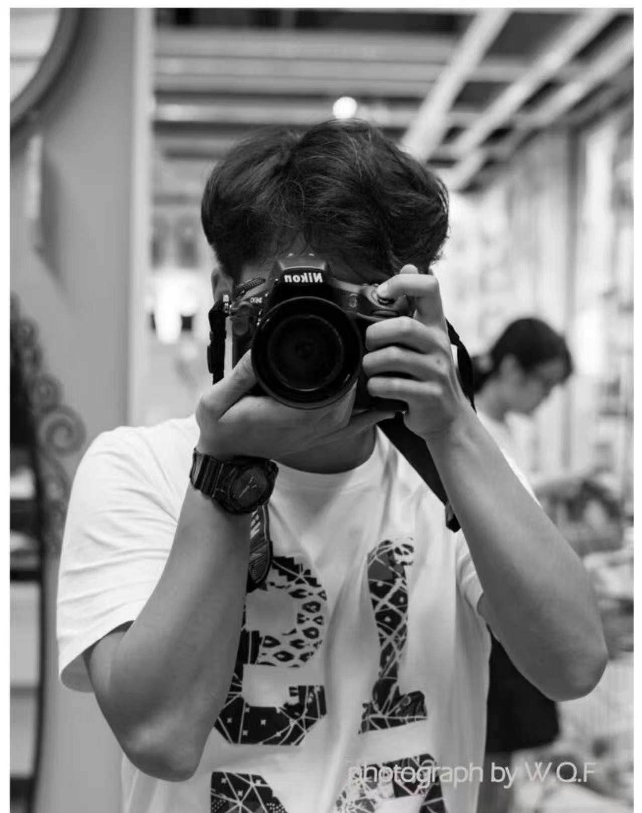

I'm Jacob — a photographer who believes every session should feel less like a photoshoot and more like a genuinely good time. My journey began in college, where I founded my own studio shooting portraits, couples, weddings, and student films. I've been shooting professionally since 2016.
After years living and working in Shanghai — where I sharpened my eye for light and authentic storytelling — I've made Boston my new home and a new chapter. I work as a quiet, unobtrusive observer: no stiff poses, no interruptions, just natural light and real emotion.
"My top priority is that you forget the camera is even there — and that the photos remind you exactly how it felt."
— Jacob Wang
Work With MeFrom your first message to the moment your gallery lands in your inbox — here's what you can expect.
Fill out the contact form. I'll respond within 48 hours to set up a call and make sure we're a great fit.
We'll talk through locations, outfits, timeline, and everything that makes your vision unique.
I'll send your contract and deposit details to officially reserve your date on my calendar.
Within the agreed timeline, you'll receive a beautifully curated online gallery — ready to download, print, and share.
"Jacob was amazing to work with. He made our engagement shoot a genuinely fun experience — coming from two people who really don't love being in front of the camera!"
— Olivia & Dan, Engagement Session"Jacob shot our wedding and blended into the background so naturally we almost forgot he was there. When we got our gallery back, every single frame brought us right back to that day."
— Lin Xiaowen & Chen Junjie, Wedding · Shanghai"He made our whole family feel completely at ease — even with little ones who don't always cooperate. The photos are natural, full of life, and we'll treasure them forever."
— The Johnson Family, Family Session"Our couples session felt nothing like a photoshoot. Jacob is quiet and unobtrusive, but somehow catches every real moment. The photos look exactly like us — not a posed version of us."
— Su Mengqi & Wang Hao, Couples Session · Boston"Jacob photographed our elopement and it was one of the best decisions we made. He has a rare gift for capturing quiet emotion — every photo tells our story perfectly."
— Mia & Lena, Elopement"The whole shoot felt so relaxed and natural. Jacob never made me feel awkward or self-conscious. When I saw the final photos, my mom cried — she said that's the real me."
— Zhang Yuxuan, Portrait Session · Boston